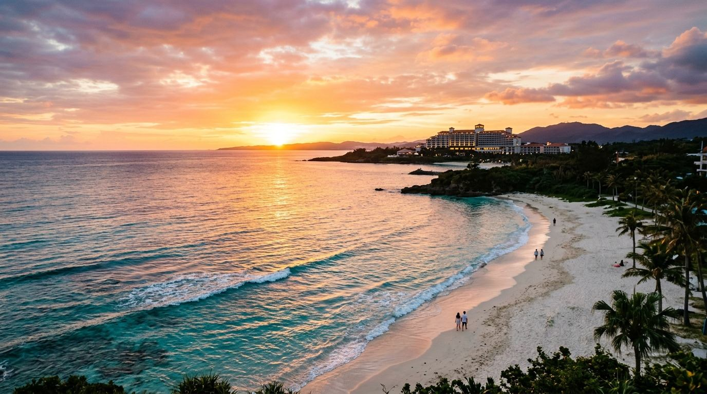
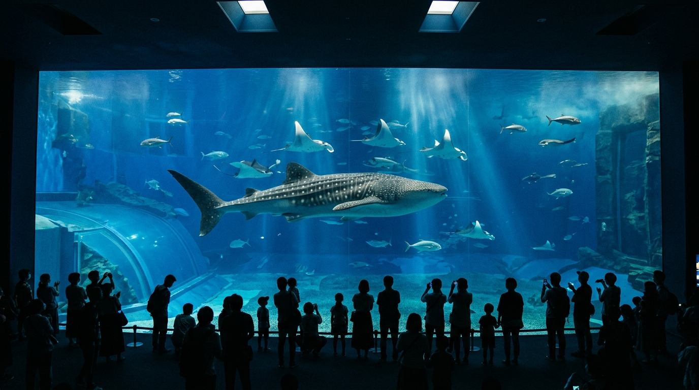
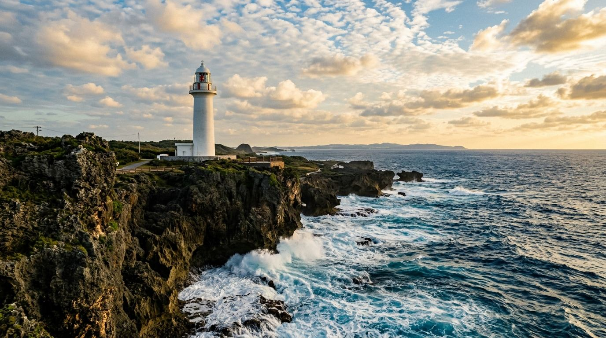
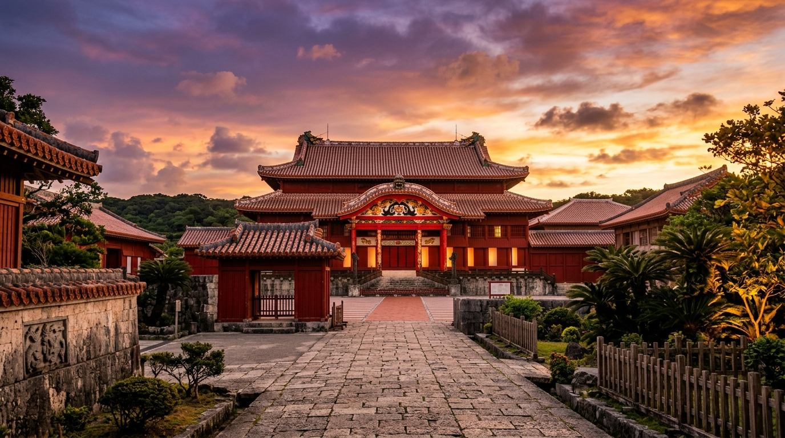

Day 1 · 落地即度假
午前抵達，直奔恩納西海岸
上午班機落地沖繩，搭利木津巴士直達度假飯店。放好行李，剩下的時間只有泳池、海灘和夕陽。

`n恩納西海岸黃昏夕陽海景
那霸機場落地
出關、領行李，約 30–40 分鐘。
搭利木津巴士或計程車前往恩納
利木津巴士從機場直達多數恩納度假飯店門口，車程約 90–120 分鐘，免搬行李。趕時間可改搭計程車，約 60 分鐘。利木津巴士 ≈ 90–120 分
抵達恩納・辦理入住
寄放行李或直接進房。先在飯店內用午餐，也可以到附近覓食。
午餐備案
- 牛排88 恩納店 60 年老字號牛排，不接受訂位、常需排隊現場候位
- 飯店內餐廳 輕鬆用餐，把胃留給晚上
萬座毛
象鼻形海崖，從飯店搭計程車約 10 分鐘。展望步道來回輕鬆走完，斷崖下是透明的珊瑚海。計程車 ≈ 10 分
回飯店・泳池與海灘放空
11 月氣溫舒適但海水偏涼，溫水泳池更實用。把節奏放到最慢。
海邊夕陽
西海岸正對落日，11 月底日落約 17:40。拿杯飲料坐在沙灘上就好。
晚餐
晚餐備案 · 恩納
- 度假鐵板燒 OCEAN 海邊鐵板燒、活龍蝦，氣氛絕佳
- 豚匠 碧 阿古豬涮涮鍋，想吃清爽選這家
Day 2 · 黑潮之海
美麗海水族館，一整天慢慢逛
從恩納出發比那霸近一個小時。觀光巴士一日遊最省心，不必自己抓末班車；想自由一點就搭計程車。

`n美麗海水族館黑潮之海鯨鯊
飯店悠閒早餐
睡到自然醒，不趕時間。
出發前往美麗海水族館
推薦兩種方式，依喜好擇一。恩納→水族館 ≈ 60–90 分
方案 B・計程車自由行：恩納→水族館約 ¥6,000–8,000，時間完全自己掌控。
沖繩美麗海水族館
一開館就進場避開人潮。黑潮之海的巨型水槽、鯨鯊與鬼蝠魟悠游其中，站在水槽前什麼都不想也很好。票根蓋章可當天再入館。
午餐・本部麵街道
縣道 84 號沿線的沖繩麵名店聚集區，從水族館搭計程車約 5–10 分鐘。計程車 ≈ 5–10 分
午餐備案 · 本部
- 岸本食堂 明治 38 年創業沖繩麵老店（週三公休，Day 2 恰好是週四）賣完即打烊
- 山原蕎麥麵 軟骨排骨麵，排隊人氣名店
- 海人料理 海邦丸 海鮮丼，不吃麵的好選擇
回園區繼續逛
海豚表演（免費）、海龜館、海牛館、熱帶夢幻中心，慢慢看到下午。
回恩納・晚餐
收工回飯店，今天早點休息。巴士團會送回飯店；自行前往可搭計程車返回。水族館→恩納 ≈ 60–90 分
Day 3 · 美國村海岸
從容的度假村早晨，午後漫步美國村
悠閒享受恩納的早晨，輕裝前往美國村逛街拍美照，找間海景咖啡廳欣賞夕陽，再返回恩納連泊。

`n殘波岬白色燈塔海岸
悠閒早餐
悠閒享受度假村的早晨，不趕。泡個泳池或散步海灘。
飯店設施放空
泳池、沙灘散步、SPA，把度假飯店的價值發揮到極致。
搭計程車前往殘波岬
白色燈塔佇立在斷崖之上，展望台可以眺望東海。恩納→殘波岬 ≈ 計程車 20 分
美國村
從殘波岬順路過來只要 15 分鐘。色彩繽紛的美式商圈，隨意逛逛拍拍照。殘波岬→美國村 ≈ 15 分
海邊咖啡廳
找間面海的咖啡廳坐下來，看北谷的海與夕陽。
回恩納度假飯店
搭計程車約 20 分鐘回飯店，休息泡湯。美國村→恩納 ≈ 計程車 20 分
晚餐
晚餐備案 · 恩納
- 鐵板燒 OCEAN 海邊鐵板燒、活龍蝦，氣氛絕佳
- 豚匠 碧 阿古豬涮涮鍋，想吃清爽選這家
- 飯店內餐廳 最輕鬆的選擇
Day 4 · 古城與黃昏
首里城、購物，入住機場旁飯店
早上搭乘利木津巴士南下那霸。看完全新正殿、買齊伴手禮，傍晚入住那霸的飯店，明天從容出發。

`n首里城黃昏景色
飯店退房・前往那霸
搭乘利木津巴士前往那霸市區。大行李可請飯店宅配至機場旁飯店（宅急便），人只帶隨身小包輕裝出發。利木津巴士 ≈ 90–120 分
首里城
搭單軌電車到「首里」站步行即達。正殿 11/23 才重新開放，這趟旅程正好看到火災重建後的全新正殿。
午餐
午餐備案 · 那霸
- JUMBO STEAK HAN'S 大份量牛排，午間套餐附沙拉吧
- 沖繩麵 EIBUN 話題沖繩麵店，值得一試
新都心購物 / 國際通
DFS 免稅店、那霸 Main Place 購物中心，或前往國際通第一牧志公設市場周邊。
瀨長島 海風露台
搭計程車約 20 分鐘，白色階梯商店街沿海而建。喝杯咖啡，看飛機從頭頂起降。計程車 ≈ 20 分
入住機場旁飯店
從瀨長島搭計程車約 10 分鐘即達。放好行李，安心享用最後一晚。
晚餐・旅程最後一夜
晚餐備案 · 那霸
- 沖繩廚房 拜風 有現場沖繩民謠表演的居酒屋，氣氛熱鬧
- 波照間 國際通店 三線琴現場演奏，道地沖繩料理
- 飯店內餐廳 不想跑遠的舒適選擇
Day 5 · 歸途
最後掃貨，下午從容回家
住在機場旁的好處——睡到自然醒，不用趕路。逛完暢貨中心或瀨長島，走進機場就好。
那霸機場飛機起飛藍天白雲
退房・飯店早餐
近機場的飯店通常有不錯的早餐。吃完不急，還有一整個上午。
沖繩 Outlet Mall Ashibinaa 或瀨長島
機場旁的暢貨中心，最後掃貨的好機會。搭計程車約 10 分鐘。計程車 ≈ 10 分
前往那霸機場
提前約 2.5–3 小時辦理國際線手續。辦完還能逛機場免稅店做最後採買。
機場最後補貨
紅芋塔、機場限定甜點、忘了買的伴手禮，一次買齊。
那霸起飛 → 桃園
約 18:00 落地桃園，回家。
Stay · 住宿資訊
兩個落腳點，各挑一間
恩納 · 3 晚西海岸度假飯店
不租車，務必選有利木津巴士直達的飯店。挑全海景＋溫水泳池，11 月偏涼更實用。價格為每晚每房淡季參考區間。
- 麗山海景皇宮度假酒店 800 公尺海灘、室內溫水池、房數多、利木津巴士直達
- 恩納最佳西方海灘飯店 白沙海灘前、房間寬敞
- 美雪海灘飯店 全海景、私人海灘、價格親民
- 蒙特利水療度假酒店 全海景＋天然溫泉＋造波池，住宿體驗最到位
- 文藝復興度假酒店 全海景、海豚互動體驗、適合親子
- 卡福度假公寓酒店 70 平方公尺套房，公寓式的居住感
- 沖繩哈利庫拉尼 360 間房全海景，頂級靜謐
- ANA 萬座洲際酒店 半島地形，三面環海視野絕佳
- 瀨良垣島凱悅酒店 獨立島嶼，真正與世隔絕的度假感
機場旁 · 1 晚最後一晚從容出發
離機場近、品質好的飯店，讓最後一天完全不趕。隔天走進機場只需幾分鐘。
- 南方海灘度假酒店 機場車程約 15 分鐘，海景泳池、有度假感
- 琉球溫泉 瀨長島飯店 緊鄰海風露台，天然溫泉、看飛機起降
- 那霸日航城市飯店 單軌電車「赤嶺」站旁，到機場一站
- Loisir 那霸飯店 機場旁、有溫泉與泳池，性價比高
Shopping · 伴手禮採買
順路把伴手禮買齊
購物塞進動線裡，不額外繞路。標籤對應行程日。
國際通＋平和通商店街
那霸最熱鬧的購物街與拱廊商店街，傍晚人潮最旺。
買：紅芋塔（御菓子御殿）· 金楚糕 · 黑糖 · 泡盛 · 沖繩鹽 · T 恤第一牧志公設市場
在地人的廚房，乾貨、鮮食與沖繩食材齊聚。一樓買、二樓代煮。
買：海葡萄 · 柴魚 · 沖繩限定食材新都心・DFS 免稅店
免稅品牌＋那霸 Main Place 購物中心，美妝藥妝一次解決。
買：免稅品牌 · 美妝藥妝 · 名產整箱驚安殿堂 國際通店
24 小時營業，零食藥妝最便宜，晚上回飯店前掃貨。
買：零食 · 藥妝 · 沖繩限定泡麵Outlet Mall Ashibinaa
機場旁暢貨中心，最後的品牌掃貨機會。
買：品牌折扣 · 運動用品那霸機場
登機前最後補貨，紅芋塔、機場限定甜點一次買齊。
買：漏買的伴手禮 · 機場限定Appendix · 補充資訊
查證資料與旅行須知
A1為什麼選 11 月下旬+
- 天氣穩定：均溫約 22°C，最高約 24–25°C，是全年降雨最少的時段之一。
- 颱風風險低：11 月後颱風接近機率大幅下降，訂機加酒最安心。
- 人少價低：非旺季，機票與飯店價格常只有暑假尖峰的一半。
- 首里城紅利：正殿 11/23 起開放內部，行程日期剛好在開放後。
- 避開公休：水族館排在週四，巧妙避開岸本食堂週三公休。
取捨：海水溫約 24–25°C，但氣溫已降，多數海灘 10 月底結束開放，不適合下海游泳。本行程主打海邊發呆與度假飯店（多有溫水泳池），想下水要改 10 月或更早，但颱風風險隨之上升。
A2班機與時差+
桃園 ⇄ 那霸飛行約 1.5 小時，日本快 1 小時，落地當地時間 ≈ 起飛 + 2.5 小時。華航、長榮、星宇、虎航、樂桃都有飛。
| 上午班（本行程） | 桃園約 07–09 起飛，那霸約 10–12 落地 |
| 下午班 | 桃園約 13–16 起飛，那霸下午至傍晚落地 |
錨點：去 TPE 08:30→OKA 11:00、回 OKA 17:30→TPE 18:00，訂到實際航班後再微調時間。
A3大眾運輸與計程車指南+
本行程全程不租車，以下是各路段的交通方式：
| 機場→恩納 | 利木津巴士直達飯店（90–120 分）或計程車（≈60 分/¥8,000–10,000） |
| 恩納→水族館 | 觀光巴士一日遊（¥5,000–8,000/人含門票）或計程車（¥6,000–8,000） |
| 恩納→那霸 | 利木津巴士（90–120 分）或計程車（≈60 分/¥8,000–10,000） |
| 那霸市內 | 單軌電車（Yui-Rail）＋步行，涵蓋國際通、市場、首里城、新都心 |
| 瀨長島 | 計程車 ≈ 20 分 |
利木津巴士是不租車旅客的最佳夥伴：從機場直達恩納各大度假飯店門口，行李放車廂，到站下車即可。建議提前查詢班次時刻。
那霸市內單軌電車「Yui-Rail」可到達國際通、牧志市場、首里城、波上宮、新都心，基本上市區觀光不需要車。
A4美麗海水族館・實用資訊+
| 開館 | 平常期 8:30–18:30（最後入館 17:30） |
| 繁忙期 | 部分期間延長至 20:00（11 月為平常期） |
| 門票 | 成人 ¥2,180／高中 ¥1,440／國中小 ¥710／6 歲以下免費 |
| 參觀時間 | 水族館約 1.5–2 小時（不含海豚秀等） |
| 停車 | 海洋博公園免費 |
| 再入館 | 當日票根蓋章可再入館 |
A5首里城・開放進度+
正殿 2019 年大火後重建，2026/11/23 起正式開放內部（前一天 11/22 舉行復原完成式）。本行程 11/28 造訪，正好在開放後。開放初期可能採預約制或設有人潮管制，出發前務必確認官方公告。
A6各區完整餐廳清單+
恩納：牛排88 恩納店／度假鐵板燒 OCEAN／大地鐵板燒（A5 和牛海景）／豚匠 碧（阿古豬涮涮鍋）
本部：岸本食堂（週三休）／山原蕎麥麵／澤之屋 本部本店／海人料理 海邦丸／花人逢（絕景披薩）
那霸：油南義／JUMBO STEAK HAN'S／果然牛排（平價）／牧志市場二樓食堂／沖繩廚房 拜風・波照間（表演居酒屋）
A711 月下旬注意事項+
- 11 月後半偶有冬季氣壓帶影響，出發前多看天氣預報。
- 早晚溫差大（最低約 19–20°C），帶薄外套或帽 T。
- 多數海灘已封閉禁泳，以散步觀景為主。
- 紫外線仍強，防曬別省。
- 11/3、11/23 為日本國定假日，本行程已避開 11/23 高峰。
A8資料來源+
- 美麗海水族館：churaumi.okinawa ／ oki-churaumi.jp
- 海洋博公園：oki-park.jp/kaiyohaku
- 首里城公園：oki-park.jp/shurijo
住宿價格與餐廳資訊整理自多家訂房與食評網站，實際以各店家官網與即時報價為準。